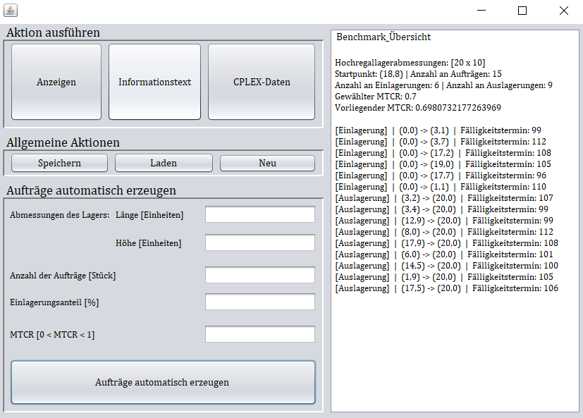
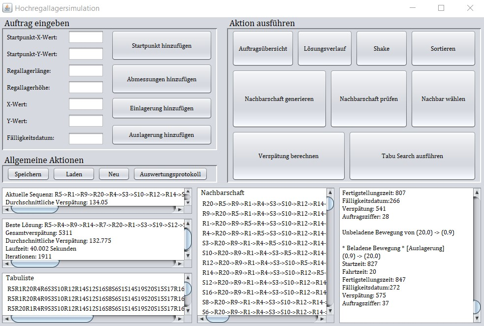

Das Problem
Man stelle sich vor es sei eine Menge an Aufträgen innerhalb eines Hochregallagers auszuführen, welche für sich genommen jeweils einen Fälligkeitstermin besitzen.
Die Fragestellung
In welcher Reihenfolge sollen die Aufträge ausgeführt werden, sodass die Gesamtverspätung minimiert wird?
Die Lösung
Das Problem wird mithilfe der Metaheuristik des Tabu Search gelöst. Diese wird dabei auf das Problem zugeschnitten. Ferner wurden diese Adaptionen mithilfe der nachfolgenden eigens konzipierten Programme getestet und ausgewertet.


Mithilfe des Programms "Tabu Search" lassen sich die zuvor erzeugten Instanzen öffnen und über die Schaltfläche "Tabu Search ausführen" mithilfe der Heuristik optimieren. Abschließend gibt das Programm die beste gefundene Lösung heraus. Ferner bestehen zahlreiche Test- und Auswertungsfunktionalitäten. Beispielsweise können Aufträge manuell eingegeben werden oder einzelne Komponenten des Tabu Search getestet werden. Zur weiteren Untersuchung der Daten oder zur Erstellungs von Plots kann ein umfassendes Auswertungsprotokoll erstellt werden.
 IAESTE Germany, Local Committee Darmstadt
IAESTE Germany, Local Committee Darmstadt